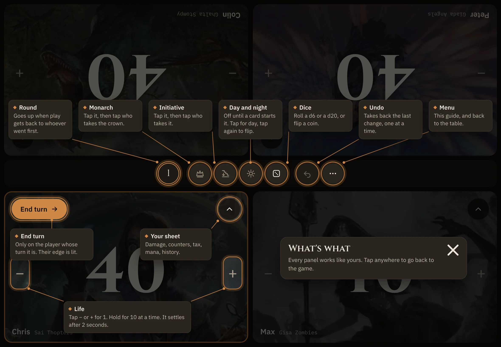
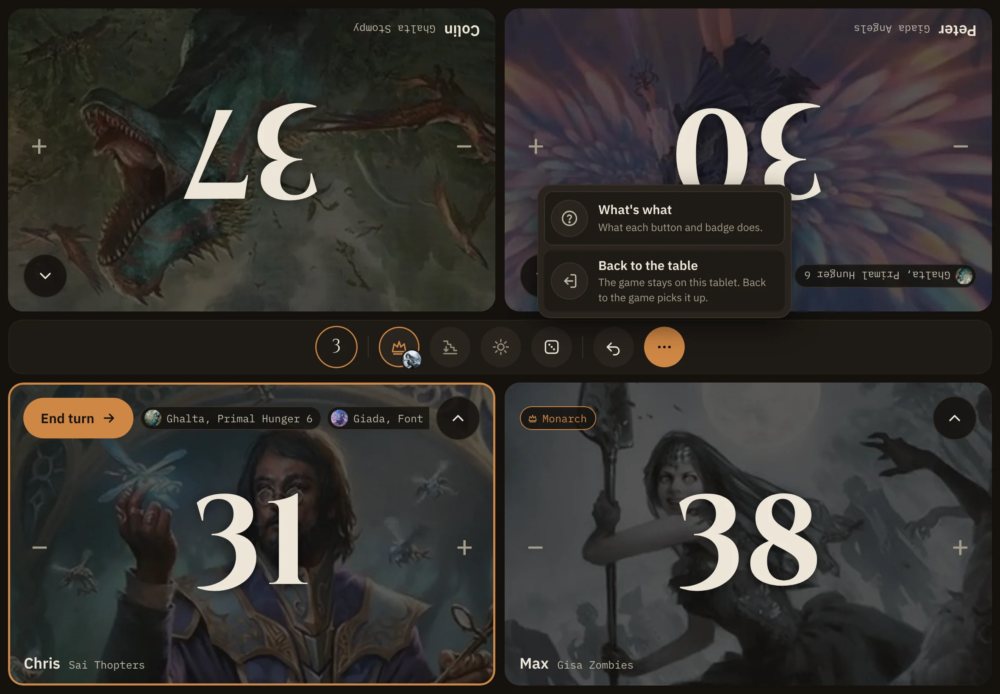
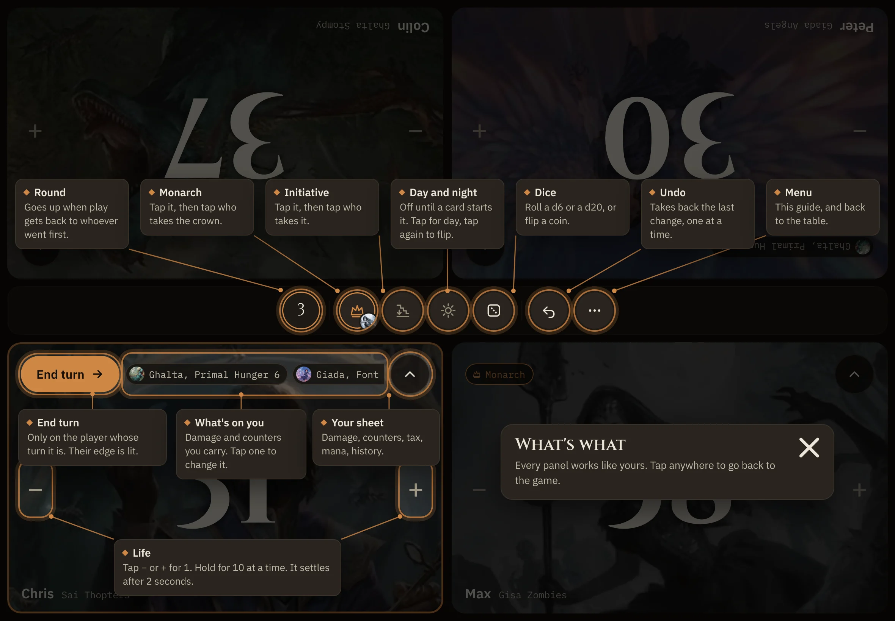

Two and two, the default four-seat layout. You sit at the foot on the left. Frames at full size.

The first game on this tablet
Round 1, everyone on 40, you go first. It arrives once the first-player roll has landed and the board has settled, plus 600 ms. No badges yet, so What's on you isn't labelled. The strip's labels sit in a row over the far panels, which have nothing of their own to label.

What's what joins the Menu
First row, above Back to the table, in the shipped row: a 44px circle (a ? here, the door there), the name and one line, "What each button and badge does." It takes focus when the Menu opens, as Back did. Pressing it closes the Menu and opens the guide.

Round 3, your turn
You carry commander damage and poison, so the badge row is lit with What's on you. The labels describe the board as it is: when it isn't your turn, End turn's label points at whichever panel shows it.